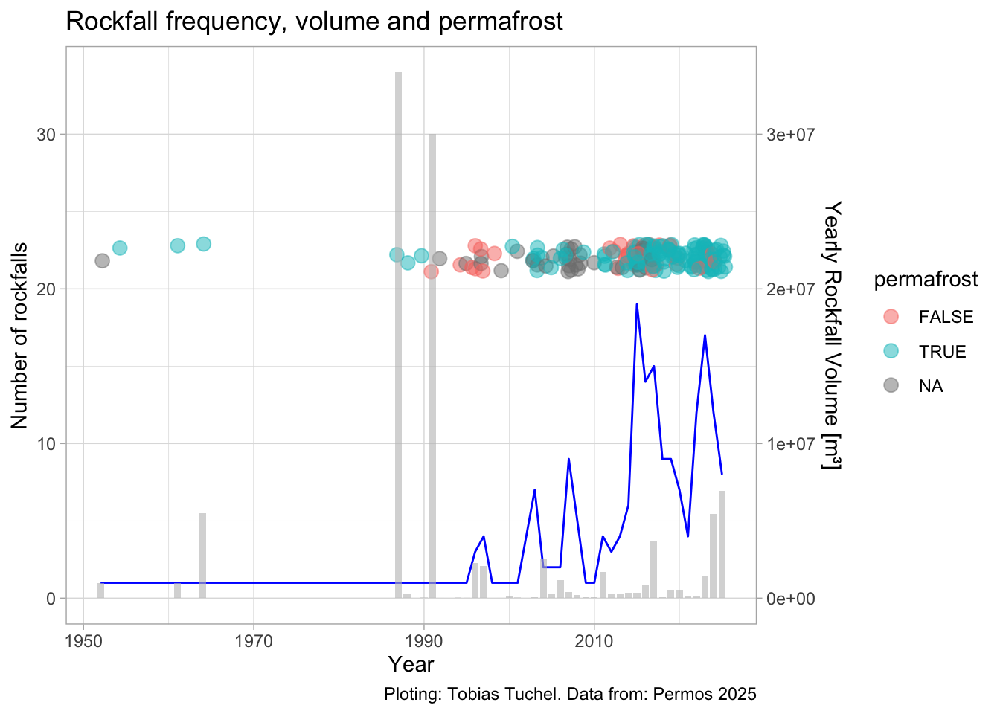
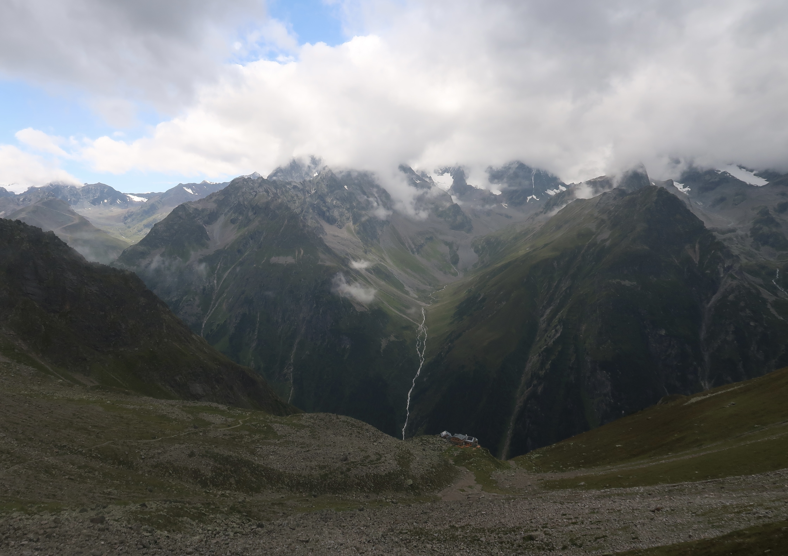

Climate Change and Geohazards in the Swiss Alps
Welcome
Rockfalls, Landslides, Glacial lake outburst floods, debris flows and many more geomorphic hazards put human lives and settlements in danger. Switzerland is a densely populated country with many mountaineous areas in the Alps. Climate Change heavily influences alpine environments, especcially the cryosphere. Therefore the hole geomorphodynamic of the alps is changing rapidly, which brings new challenges for both adaption and mitigation strategies.
Speaking about hazards, the hazard itself, like debris flows and landslides must be understood, in terms of their triggering processes and their propagation mechanisms. Building on that the impact of the modelled climate change can be estimated, which will then helps to identify, which strategies can be choosen to cope with those hazards.
Case Studies
Blatten

Bondo
Damage
Hazards
Debris flows
Rockfalls
Landslides
Climate Change
Since the 19th century the climate of the european alps is changing dramatical. Temperature increased around 2 °C celsius and is expected to increase further (Fig. 2).

The speed and intensity of climate change outpaces global warming (Dumont et al. 2025). That has multiple effects, especially on the cryosphere and hydrosphere. Frequency, location and magnitude of hazards in the rapid changing alpine environment are extremely sensitive to climate change (Mani 2021).

Mitigation and Adaption
As a country with one of worlds highest GDPs and living standards and as well as
 Fig. X Rebuilding and Reparation after the Bondo Landslide of 2017.
Fig. X Rebuilding and Reparation after the Bondo Landslide of 2017.
References
Figures and Pictures:
- Fig. 1: SRF, 2025. Picture of Blatten Landslide [online]. Available from: https://il.srf.ch/images/?imageUrl=https:%2F%2Fdownload-media.srf.ch%2Fworld%2Fimage%2Fdefault%2F2025%2F07%2Fd519bb13422233727111535947.jpg&format=jpg&width=960 [16/11/2025]
- Fig. X: Canton Grisons, 2025. Presse-Infos zum Bergsturz Piz Cengalo / Murgang Bondo. Available from: https://www.gr.ch/DE/institutionen/verwaltung/diem/awn/aktuelles/PresseDownloads/2017_10_27__O3A9902.jpg [16/11/2025]
Literature
Brunner, M.; Jacquemart, M.; Weber, S. 2024. Wie verändern sich Risiken im Alpenraum in Bezug auf hydrologische und gravitative Naturgefahren? In: WSL Berichte, Vol. 2024, Issue 157, pp. 21-24.
Dumont, M.; Monteiro, D.; Filhol, S.; Gasconin, S.; Marty, C.; Hagenmuller, P.; Morin, S.; Choler, P.; Thuiller, W. The European Alps in a changing climate: physical trends and impacts. In: Comptes Rendus Géoscience Sciences de la Planète, Vol. 2025, I. 357, pp. 25-42.
Mani, P. 2021. Geomorphic Process Chains in High-Mountain Regions - A Review ad Classification Approach for Natural Hazards Assessments. In: Reviews of Geophysics, Vol. 61, I. 4, pp. 1-51.
Moser, M.; Hamberger, M.; Schoger, H.; Rohn, J. 2025: Hangmuren. Springer Spekturm: Berlin.
Qie, J. 2023. A supply limited torrent, that does not feel the heat of climate change. In: Nature Communications, Vol. 2024, I. 15:9078, pp. 1-10.
Word Count
The total number of words on this page is 1146.